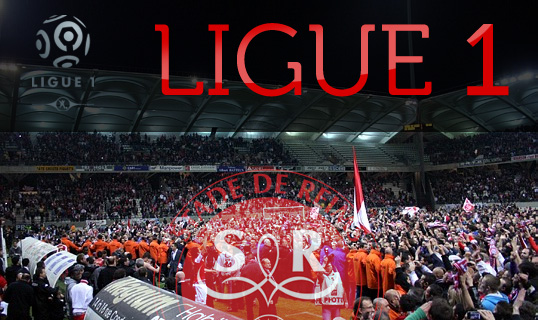
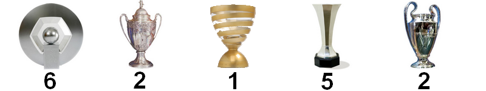
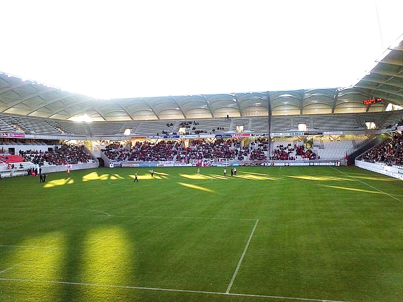
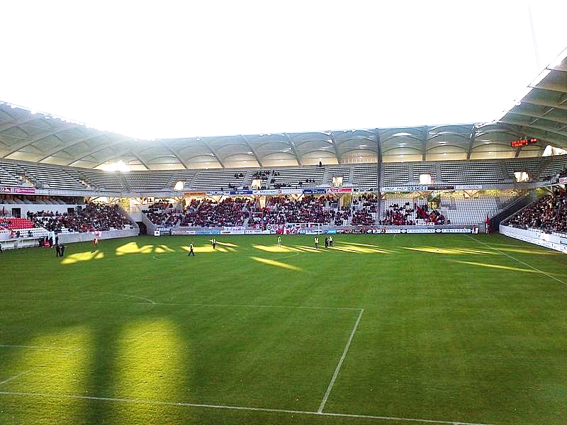
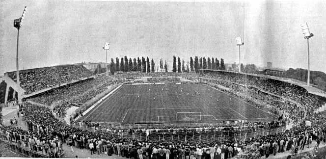
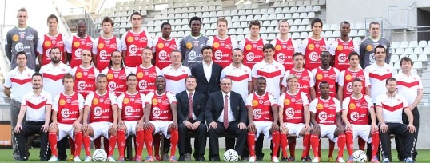

Le Stade de Reims, club de football français, a été fondé le 18 juin 1931 à Reims, en Champagne-Ardenne. Le Stade de Reims emménage en 1934 dans le nouveau vélodrome municipal, futur stade Auguste-Delaune.
Champion de France amateur en 1935, le club opte pour une nouvelle ère et intègre la deuxième division du championnat de France. En 1938, la fusion avec le Sporting Club rémois, le grand rival local au maillot rouge et blanc, donne un nouvel élan à l'ensemble, qui est promu en première division à la sortie de la guerre.
Durant les années 1950, le Stade de Reims s’est imposé comme étant le principal club français, amassant en quelques années un palmarès prestigieux. Le Stade de Reims a été porté par des personnalités emblématiques (par exemple : l'entraîneur Albert Batteux, le président Henri Germain ou encore le meneur de jeu Raymond Kopa), il remporte à six reprises le championnat de France et deux fois la coupe de France entre 1949 et 1962. Représentants français à la première édition de la Coupe des clubs champions européens en 1956, les coéquipiers du capitaine Robert Jonquet s'inclinent de justesse en finale face au Real Madrid. L’histoire se répète trois ans plus tard, face au même adversaire.
En 1963, le club connait un recul sportif car celui-ci est relégué en deuxième division en 1964 et 1967. Dans les années 1970, le club est de retour dans l’élite1970 mais il devient un pensionnaire régulier de la D2 jusqu'à sa liquidation judiciaire en 1991.
C’est un coup dur pour le Stade de Reims car le club repart en Division d'honneur du Nord-Est, ce qui est l’équivalent au 6e échelon du football français. Il faudra dix saisons pour remonter en Ligue 2.
En 2012, le Stade de Reims fait son grand retour dans l'élite, 33 ans après sa dernière saison au plus haut niveau national. Le club est présidé depuis 2004 par Jean-Pierre Caillot et entraîné par Hubert Fournier depuis mai 2010.

- Finaliste de la Coupe d'Europe des Clubs Champions en 1956 et 1959
- Champion de France de Division 1 en 1949, 1953, 1955, 1958, 1960, 1962
- Champion de France Zone Nord 1942
- Champion de France de Division 2 en 1966
- Champion de France de National en 2004
- Coupe de France en 1950 et 1958
- Coupe Latine en 1953
- Coupe Drago en 1954
- Champion de France Amateurs en 1935 et 1939
- Coupe Gambardella en 1964
- Coupe de la Ligue 1991

C’est en 1945 que l’enceinte champenoise est renommée Auguste-Delaune, en mémoire de ce sportif normand torturé à mort par la Gestapo et décédé le 13 mai 1943. Avant la guerre, les responsables de la ville l’avaient nommée astucieusement Stade municipal.
Le stade Auguste-Delaune est officiellement inauguré le 2 juin 1935 sous le nom de « Stade municipal » et avait une capacité de 5000 places.
Au début des années 2000, le Stade de Reims est porté par de nouvelles ambitions ; le club retrouve l’échelon professionnel en 2002 à la suite de la montée en Ligue 2.
En octobre 1997, le maire de Reims Jean Falala annonce son souhait de voir le stade Delaune reconstruit avec une capacité de 22 000 places, un stade à l’image des ambitions du club.
La reconstruction du stade a duré près de sept années, l'ex-vélodrome a laissé place en août 2008 à un stade rénové, modernisé et agrandi. L’architecture de celui-ci ressemble fortement aux stades anglais avec des tribunes au plus près de la pelouse. Le coût des travaux est évalué à 57 millions d'euros.
L'inauguration de l'enceinte d'une capacité de 21 684 spectateurs a lieu le 5 décembre 2008, lors du match opposant Reims au Racing Club de Lens.
Les tribunes:
- Officielle: tribune Henri-Germain
- Latérale: tribune Francis-Méano
- Sud: tribune Robert-Jonquet
- Nord: tribune Albert-Batteux


 


Record absolu d'affluence au Stade Auguste Delaune lors du match Reims/marseille avec 27 774 spectateurs en 1/2 finale de coupe de France 1987

Pour cette saison 2012/2013, le Stade de Reims a terminé le championnat de France à la 14ème place derrière le Stade Rennais FC et devant le FC Sochaux-Montbéliard. Cette équipe pleine d'ambition jouera donc toujours en ligue 1 l'année prochaine pour la deuxième année consécutive depuis sa montée féérique de 2012